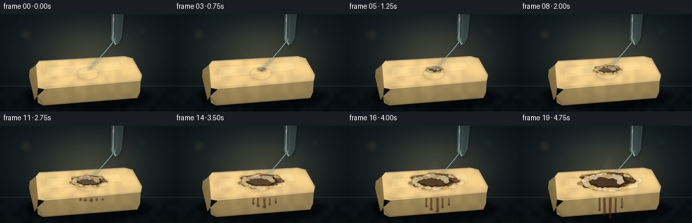
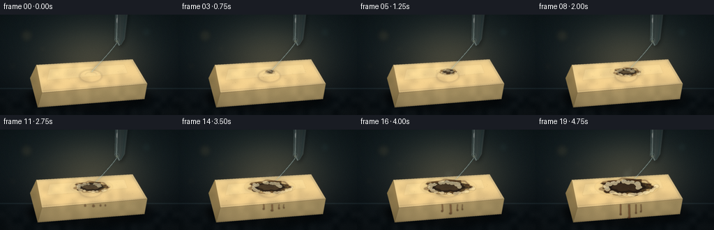
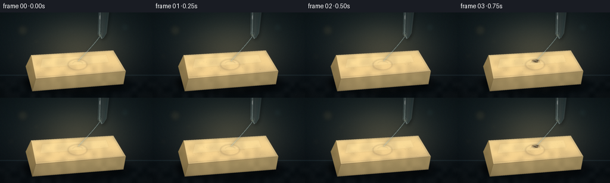
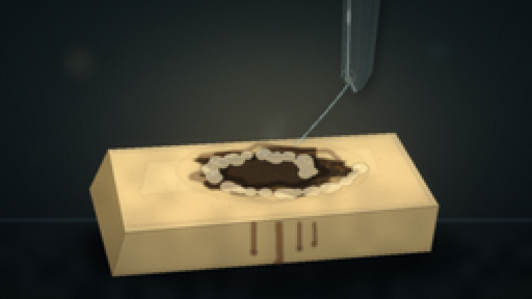
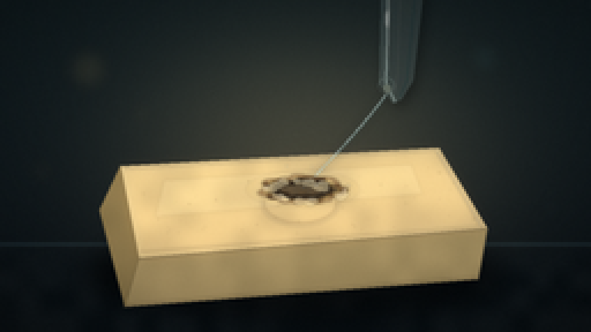
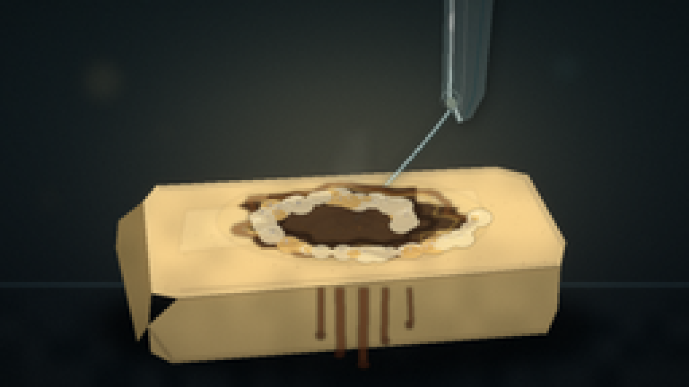
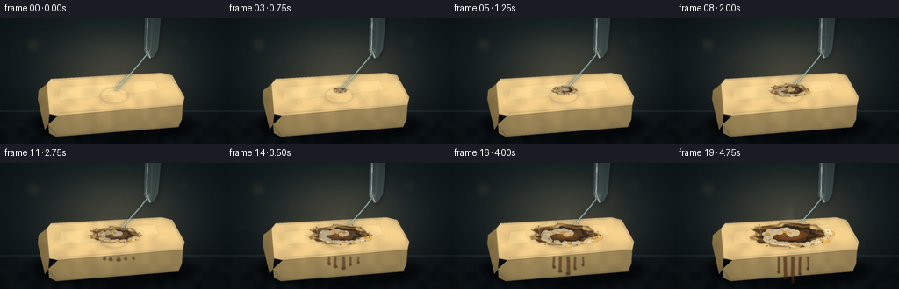

CODING AGENTS AS PIXEL WORLD MODELS
traex/DeepSeek-V4.1-Flash · material_0042
点击播放 · 原生 RGB 像素
逐轮保存的候选
回放视频、检查图与代码变化。
每份候选均可单独播放。实际图片检查记录在下方工具轨迹中。
候选 01播放与检查图
点击播放 · 原生 RGB 像素

展开代码变化
--- 上一保存版本
+++ 本次保存版本
@@ -0,0 +1,508 @@
+from pathlib import Path
+import math
+
+import numpy as np
+from PIL import Image, ImageChops, ImageDraw, ImageFilter
+
+import artifact_io
+
+
+WIDTH = 256
+HEIGHT = 144
+FRAMES = 20
+FPS = 4
+SS = 4
+W = WIDTH * SS
+H = HEIGHT * SS
+RNG = np.random.default_rng(1847)
+
+
+def sc(value):
+ return int(round(value * SS))
+
+
+def point(p):
+ return (sc(p[0]), sc(p[1]))
+
+
+def box(x0, y0, x1, y1):
+ return [sc(x0), sc(y0), sc(x1), sc(y1)]
+
+
+def scaled_points(points):
+ return [point(p) for p in points]
+
+
+def new_layer():
+ return Image.new("RGBA", (W, H), (0, 0, 0, 0))
+
+
+def composite(base, layer):
+ return Image.alpha_composite(base.convert("RGBA"), layer)
+
+
+def masked_layer(layer, mask):
+ clipped = layer.copy()
+ clipped.putalpha(ImageChops.multiply(clipped.getchannel("A"), mask))
+ return clipped
+
+
+def make_texture(shape, coarse, fine, seed):
+ rng = np.random.default_rng(seed)
+ small = rng.normal(0.5, 1.0, (max(2, shape[0] // 34), max(2, shape[1] // 34)))
+ small = np.clip(small, 0, 1)
+ coarse_tex = np.asarray(
+ Image.fromarray((small * 255).astype(np.uint8)).resize(
+ (shape[1], shape[0]), Image.Resampling.BICUBIC
+ ),
+ dtype=np.float32,
+ ) / 255.0
+ grain = rng.normal(0.0, 1.0, shape)
+ grain = np.asarray(
+ Image.fromarray(
+ np.clip(grain * 28 + 128, 0, 255).astype(np.uint8)
+ ).filter(ImageFilter.GaussianBlur(0.7)),
+ dtype=np.float32,
+ ) / 255.0
+ return coarse * (coarse_tex - 0.5) + fine * (grain - 0.5)
+
+
+def background():
+ yy, xx = np.mgrid[0:H, 0:W].astype(np.float32)
+ xn = xx / W
+ yn = yy / H
+
+ top = np.array([18, 30, 34], dtype=np.float32)
+ bottom = np.array([10, 16, 21], dtype=np.float32)
+ image = top[None, None, :] * (1.0 - yn[..., None]) + bottom[None, None, :] * yn[..., None]
+
+ glow = np.exp(-(((xx - 0.52 * W) / (0.30 * W)) ** 2 + ((yy - 0.48 * H) / (0.38 * H)) ** 2))
+ warm = np.array([54, 45, 29], dtype=np.float32)
+ image += glow[..., None] * warm[None, None, :]
+
+ # A soft dark tabletop horizon gives the macro shot a physical setting.
+ horizon = 0.735 * H
+ table_blend = np.clip((yy - horizon) / (0.11 * H), 0.0, 1.0)
+ table = np.zeros_like(image)
+ table[..., 0] = 13
+ table[..., 1] = 20
+ table[..., 2] = 24
+ image = image * (1.0 - table_blend[..., None]) + table * table_blend[..., None]
+
+ table_grain = make_texture((H, W), 7.0, 2.5, 16)
+ image += table_grain[..., None] * table_blend[..., None]
+ horizon_line = np.exp(-((yy - horizon) / (0.006 * H)) ** 2)
+ image += horizon_line[..., None] * np.array([13, 19, 21], dtype=np.float32)
+
+ base = Image.fromarray(np.clip(image, 0, 255).astype(np.uint8), "RGB").convert("RGBA")
+
+ # Out-of-focus lab highlights, restrained enough to remain a background.
+ bokeh = new_layer()
+ bd = ImageDraw.Draw(bokeh)
+ circles = [
+ (38, 30, 9, (210, 173, 105, 24)),
+ (61, 49, 4, (223, 188, 119, 19)),
+ (210, 25, 7, (98, 167, 169, 17)),
+ (223, 54, 3, (157, 208, 202, 15)),
+ (18, 74, 5, (187, 151, 84, 14)),
+ (239, 90, 4, (111, 159, 153, 12)),
+ ]
+ for x, y, radius, color in circles:
+ bd.ellipse(box(x - radius, y - radius, x + radius, y + radius), fill=color)
+ bokeh = bokeh.filter(ImageFilter.GaussianBlur(sc(3.4)))
+ base = composite(base, bokeh)
+
+ # Broad specular streak on the bench.
+ sheen = new_layer()
+ sd = ImageDraw.Draw(sheen)
+ sd.ellipse(box(66, 104, 201, 137), fill=(70, 75, 67, 16))
+ sd.ellipse(box(92, 110, 172, 128), fill=(135, 119, 84, 10))
+ sheen = sheen.filter(ImageFilter.GaussianBlur(sc(6.5)))
+ return composite(base, sheen).convert("RGB")
+
+
+def draw_soap(base):
+ top = [(52, 72), (190, 64), (211, 99), (60, 112)]
+ front = [(60, 112), (211, 99), (207, 121), (54, 133)]
+ left = [(52, 72), (60, 112), (54, 133), (43, 91)]
+
+ shadow = new_layer()
+ shd = ImageDraw.Draw(shadow)
+ shd.ellipse(box(37, 100, 217, 138), fill=(0, 0, 0, 176))
+ shd.ellipse(box(48, 107, 207, 134), fill=(0, 0, 0, 128))
+ shadow = shadow.filter(ImageFilter.GaussianBlur(sc(5.5)))
+ base = composite(base, shadow)
+
+ top_mask = Image.new("L", (W, H), 0)
+ ImageDraw.Draw(top_mask).polygon(scaled_points(top), fill=255)
+ top_mask = top_mask.filter(ImageFilter.GaussianBlur(sc(0.32)))
+
+ yy, xx = np.mgrid[0:H, 0:W].astype(np.float32)
+ u = xx / W
+ v = yy / H
+ tex = make_texture((H, W), 15.0, 5.0, 73)
+
+ # Warm ivory soap with a faint translucent depth near the back edge.
+ top_rgb = np.zeros((H, W, 3), dtype=np.float32)
+ top_rgb[..., 0] = 224 - 17 * v + 8 * (1 - u) + tex
+ top_rgb[..., 1] = 204 - 22 * v + 7 * (1 - u) + 0.86 * tex
+ top_rgb[..., 2] = 151 - 23 * v + 5 * (1 - u) + 0.70 * tex
+ top_img = Image.fromarray(np.clip(top_rgb, 0, 255).astype(np.uint8), "RGB").convert("RGBA")
+ base.paste(top_img, (0, 0), top_mask)
+
+ # Soft broad reflection and crisp back-edge highlight.
+ top_light = new_layer()
+ td = ImageDraw.Draw(top_light)
+ td.polygon(scaled_points([(71, 78), (178, 71), (183, 84), (67, 94)]), fill=(255, 246, 208, 27))
+ td.line(scaled_points([(54, 73), (189, 65), (209, 99)]), fill=(255, 248, 220, 102), width=sc(0.65))
+ td.line(scaled_points([(61, 109), (209, 98)]), fill=(128, 94, 55, 52), width=sc(0.65))
+ top_light = top_light.filter(ImageFilter.GaussianBlur(sc(0.45)))
+ base = composite(base, masked_layer(top_light, top_mask))
+
+ # Embossed soap seal.
+ emboss = new_layer()
+ ed = ImageDraw.Draw(emboss)
+ ed.ellipse(box(113, 78, 147, 98), outline=(255, 244, 199, 62), width=sc(0.8))
+ ed.ellipse(box(114, 79, 146, 97), outline=(114, 83, 48, 58), width=sc(0.7))
+ ed.arc(box(121, 82, 140, 94), 202, 338, fill=(255, 245, 203, 67), width=sc(0.6))
+ emboss = emboss.filter(ImageFilter.GaussianBlur(sc(0.38)))
+ base = composite(base, masked_layer(emboss, top_mask))
+
+ front_mask = Image.new("L", (W, H), 0)
+ ImageDraw.Draw(front_mask).polygon(scaled_points(front), fill=255)
+ front_mask = front_mask.filter(ImageFilter.GaussianBlur(sc(0.25)))
+ front_rgb = np.zeros((H, W, 3), dtype=np.float32)
+ front_rgb[..., 0] = 178 - 24 * v + 7 * (1 - u) + tex * 0.7
+ front_rgb[..., 1] = 158 - 24 * v + 5 * (1 - u) + tex * 0.6
+ front_rgb[..., 2] = 108 - 18 * v + 4 * (1 - u) + tex * 0.45
+ front_img = Image.fromarray(np.clip(front_rgb, 0, 255).astype(np.uint8), "RGB").convert("RGBA")
+ base.paste(front_img, (0, 0), front_mask)
+
+ left_mask = Image.new("L", (W, H), 0)
+ ImageDraw.Draw(left_mask).polygon(scaled_points(left), fill=255)
+ left_mask = left_mask.filter(ImageFilter.GaussianBlur(sc(0.3)))
+ left_rgb = np.zeros((H, W, 3), dtype=np.float32)
+ left_rgb[..., 0] = 151 - 16 * v + tex * 0.5
+ left_rgb[..., 1] = 129 - 14 * v + tex * 0.4
+ left_rgb[..., 2] = 82 - 9 * v + tex * 0.3
+ left_img = Image.fromarray(np.clip(left_rgb, 0, 255).astype(np.uint8), "RGB").convert("RGBA")
+ base.paste(left_img, (0, 0), left_mask)
+
+ edge = new_layer()
+ ed = ImageDraw.Draw(edge)
+ ed.line(scaled_points([(60, 112), (211, 99), (207, 121)]), fill=(255, 231, 169, 55), width=sc(0.6))
+ ed.line(scaled_points([(54, 132), (207, 120)]), fill=(54, 35, 24, 65), width=sc(0.8))
+ edge = edge.filter(ImageFilter.GaussianBlur(sc(0.45)))
+ base = composite(base, edge)
+
+ # Fine irregularities keep the bar from reading as a flat vector shape.
+ flecks = new_layer()
+ fd = ImageDraw.Draw(flecks)
+ for _ in range(110):
+ x = RNG.uniform(54, 207)
+ y = RNG.uniform(71, 112)
+ # Reject points outside the approximate top-face silhouette.
+ if y < 72 + (190 - x) * 0.08 or y > 110 - (x - 60) * 0.087:
+ continue
+ r = RNG.uniform(0.12, 0.45)
+ alpha = int(RNG.uniform(10, 34))
+ fd.ellipse(box(x - r, y - r, x + r, y + r), fill=(93, 71, 42, alpha))
+ flecks = flecks.filter(ImageFilter.GaussianBlur(sc(0.25)))
+ base = composite(base, masked_layer(flecks, top_mask))
+ return base.convert("RGB")
+
+
+def draw_pipette(base):
+ shadow = new_layer()
+ sd = ImageDraw.Draw(shadow)
+ sd.polygon(scaled_points([(168, 0), (185, 0), (180, 39), (173, 48), (166, 37)]), fill=(0, 0, 0, 86))
+ shadow = shadow.filter(ImageFilter.GaussianBlur(sc(2.8)))
+ base = composite(base, shadow)
+
+ glass = new_layer()
+ gd = ImageDraw.Draw(glass)
+ tube = [(165, -8), (184, -8), (179, 35), (174, 43), (170, 45), (164, 36)]
+ gd.polygon(scaled_points(tube), fill=(176, 212, 211, 43))
+ gd.line(scaled_points([(168, -7), (167, 36), (171, 44)]), fill=(227, 250, 244, 122), width=sc(1.1))
+ gd.line(scaled_points([(180, -6), (176, 35), (173, 42)]), fill=(76, 121, 126, 72), width=sc(1.0))
+ gd.line(scaled_points([(173, 0), (172, 31), (171, 40)]), fill=(241, 255, 248, 46), width=sc(0.55))
+ gd.ellipse(box(163.8, 33.6, 170.8, 40.6), outline=(214, 245, 237, 78), width=sc(0.55))
+ gd.ellipse(box(165.8, 36.4, 169.2, 40.1), fill=(226, 245, 218, 83))
+ glass = glass.filter(ImageFilter.GaussianBlur(sc(0.35)))
+ base = composite(base, glass)
+
+ glint = new_layer()
+ ld = ImageDraw.Draw(glint)
+ ld.line(scaled_points([(168.5, 0), (168, 25)]), fill=(255, 255, 245, 155), width=sc(0.65))
+ ld.ellipse(box(166.8, 4, 168.0, 12), fill=(255, 255, 252, 165))
+ glint = glint.filter(ImageFilter.GaussianBlur(sc(0.7)))
+ return composite(base, glint).convert("RGB")
+
+
+def bezier(p0, p1, p2, p3, count=80):
+ values = []
+ for i in range(count):
+ t = i / (count - 1)
+ omt = 1 - t
+ x = omt**3 * p0[0] + 3 * omt**2 * t * p1[0] + 3 * omt * t**2 * p2[0] + t**3 * p3[0]
+ y = omt**3 * p0[1] + 3 * omt**2 * t * p1[1] + 3 * omt * t**2 * p2[1] + t**3 * p3[1]
+ values.append((x, y))
+ return values
+
+
+def draw_stream(base, t, progress):
+ impact = (131.0 + 0.7 * math.sin(t * 8.0), 82.0)
+ stream = new_layer()
+ sd = ImageDraw.Draw(stream)
+ wobble = 0.55 * math.sin(t * 17.0)
+ path = bezier((167, 41), (157, 55), (143 + wobble, 69), impact)
+
+ # Liquid core and glassy edge.
+ sd.line(scaled_points(path), fill=(206, 245, 241, 102), width=sc(1.45))
+ sd.line(scaled_points(path), fill=(245, 255, 246, 155), width=sc(0.48))
+ sd.line(scaled_points([(x + 0.55, y + 0.15) for x, y in path]), fill=(116, 186, 191, 45), width=sc(0.55))
+
+ if progress > 0:
+ radius = 1.8 + 5.0 * progress
+ sd.ellipse(
+ box(impact[0] - radius, impact[1] - radius * 0.35, impact[0] + radius, impact[1] + radius * 0.35),
+ outline=(230, 251, 226, int(60 + 70 * progress)),
+ width=sc(0.55),
+ )
+ sd.arc(
+ box(impact[0] - radius * 1.3, impact[1] - radius * 0.55, impact[0] + radius * 1.3, impact[1] + radius * 0.55),
+ 202,
+ 337,
+ fill=(198, 228, 211, int(35 + 42 * progress)),
+ width=sc(0.45),
+ )
+
+ stream = stream.filter(ImageFilter.GaussianBlur(sc(0.24)))
+ base = composite(base, stream)
+
+ bloom = stream.filter(ImageFilter.GaussianBlur(sc(2.0)))
+ return composite(base, bloom).convert("RGB")
+
+
+def reaction_mask(t, progress, center=(131, 82)):
+ layer = new_layer()
+ draw = ImageDraw.Draw(layer)
+ if progress <= 0:
+ return layer
+
+ radius = 2.0 + 23.5 * (progress**0.78)
+ # A wet acid patch is visible before the darker burned core.
+ wet_r = radius + 4.0 + 3.0 * progress
+ draw.ellipse(
+ box(center[0] - wet_r * 1.42, center[1] - wet_r * 0.46, center[0] + wet_r * 1.42, center[1] + wet_r * 0.46),
+ fill=(210, 179, 106, int(20 + 20 * progress)),
+ )
+
+ polygon = []
+ for i in range(48):
+ angle = 2 * math.pi * i / 48
+ noise = (
+ 1.0
+ + 0.12 * math.sin(5 * angle + 1.7)
+ + 0.08 * math.sin(11 * angle + 0.4)
+ + 0.045 * math.sin(19 * angle + 2.3)
+ )
+ rr = radius * noise
+ polygon.append((center[0] + rr * 1.42 * math.cos(angle), center[1] + rr * 0.44 * math.sin(angle)))
+ draw.polygon(scaled_points(polygon), fill=(42, 28, 17, int(145 + 86 * progress)))
+ return layer.filter(ImageFilter.GaussianBlur(sc(0.45)))
+
+
+def draw_reaction(base, t, progress, top_mask):
+ if progress <= 0:
+ return base
+
+ center = (131, 82)
+ radius = 2.0 + 23.5 * (progress**0.78)
+
+ wet = reaction_mask(t, progress, center)
+ base = composite(base, masked_layer(wet, top_mask))
+
+ # Crater rim, charred flakes, and acid-lit inner edge.
+ rim = new_layer()
+ rd = ImageDraw.Draw(rim)
+ for ring, width, color, alpha in [
+ (1.00, 2.1, (89, 50, 25), 120),
+ (0.86, 1.0, (235, 189, 88), 72),
+ (0.67, 2.4, (18, 13, 11), 150),
+ ]:
+ pts = []
+ for i in range(64):
+ angle = 2 * math.pi * i / 64
+ noise = 1.0 + 0.10 * math.sin(7 * angle + 0.6) + 0.05 * math.sin(15 * angle + 2.1)
+ rr = radius * ring * noise
+ pts.append((center[0] + rr * 1.42 * math.cos(angle), center[1] + rr * 0.44 * math.sin(angle)))
+ rd.line(scaled_points(pts + [pts[0]]), fill=color + (alpha,), width=sc(width))
+ rim = rim.filter(ImageFilter.GaussianBlur(sc(0.55)))
+ base = composite(base, masked_layer(rim, top_mask))
+
+ # A few brittle crust plates catch the warm key light.
+ crust = new_layer()
+ cd = ImageDraw.Draw(crust)
+ for k in range(13):
+ angle = k * 2.399 + 0.2
+ radial = radius * (0.25 + 0.52 * ((k * 37) % 100) / 100)
+ x = center[0] + radial * 1.42 * math.cos(angle)
+ y = center[1] + radial * 0.44 * math.sin(angle)
+ length = 1.2 + 2.6 * progress
+ cd.arc(
+ box(x - length, y - length * 0.35, x + length, y + length * 0.35),
+ int((k * 51) % 360),
+ int((k * 51) % 360 + 92),
+ fill=(169, 108, 47, 80),
+ width=sc(0.5),
+ )
+ crust = crust.filter(ImageFilter.GaussianBlur(sc(0.28)))
+ base = composite(base, masked_layer(crust, top_mask))
+
+ # Foam is dense around the rim and becomes more agitated with time.
+ foam = new_layer()
+ fd = ImageDraw.Draw(foam)
+ bubble_count = int(20 + 66 * progress)
+ for i in range(bubble_count):
+ phase = (i * 0.61803398875) % 1.0
+ angle = i * 2.399963 + 0.45 * math.sin(t * 5.0 + i)
+ radial = radius * (0.48 + 0.67 * phase)
+ x = center[0] + radial * 1.42 * math.cos(angle) + 1.0 * math.sin(t * 9 + i * 1.7)
+ y = center[1] + radial * 0.44 * math.sin(angle) + 0.45 * math.cos(t * 7 + i)
+ size = (0.75 + 2.25 * ((i * 29) % 100) / 100.0) * (0.65 + 0.7 * progress)
+ alpha = int(92 + 80 * progress)
+ fd.ellipse(box(x - size, y - size * 0.68, x + size, y + size * 0.68), fill=(234, 218, 171, alpha))
+ fd.arc(
+ box(x - size, y - size * 0.68, x + size, y + size * 0.68),
+ 190,
+ 342,
+ fill=(255, 250, 222, min(230, alpha + 40)),
+ width=sc(0.35),
+ )
+ if size > 1.3:
+ fd.ellipse(box(x - size * 0.32, y - size * 0.37, x - size * 0.03, y - size * 0.12), fill=(255, 255, 240, 125))
+ foam = foam.filter(ImageFilter.GaussianBlur(sc(0.28)))
+ base = composite(base, masked_layer(foam, top_mask))
+
+ # Melt runs over the front edge late in the timelapse.
+ if progress > 0.46:
+ melt_p = (progress - 0.46) / 0.54
+ melt = new_layer()
+ md = ImageDraw.Draw(melt)
+ drip_specs = [(-8, 14, 2.3), (4, 19, 3.0), (14, 12, 1.8), (21, 10, 1.4)]
+ for dx, length, width in drip_specs:
+ x = 130 + dx
+ y0 = 107
+ y1 = y0 + length * melt_p
+ md.line(
+ scaled_points([(x, y0), (x - 0.7 * math.sin(t * 8 + dx), y1)]),
+ fill=(89, 45, 22, int(105 + 50 * melt_p)),
+ width=sc(width * (0.7 + 0.3 * melt_p)),
+ )
+ md.ellipse(box(x - width * 0.65, y1 - 1.0, x + width * 0.65, y1 + 1.8), fill=(71, 36, 20, int(125 + 45 * melt_p)))
+ melt = melt.filter(ImageFilter.GaussianBlur(sc(0.55)))
+ base = composite(base, melt)
+
+ return base
+
+
+def draw_smoke(base, t, progress):
+ if progress < 0.10:
+ return base
+ smoke = new_layer()
+ sd = ImageDraw.Draw(smoke)
+ count = 7
+ for i in range(count):
+ phase = (t * 0.8 + i / count) % 1.0
+ age = progress * phase
+ start_x = 131 + (i - count / 2) * 1.6
+ start_y = 79 - 1.5 * i
+ length = (9 + 17 * progress) * (0.55 + 0.45 * phase)
+ points = []
+ for j in range(18):
+ q = j / 17
+ x = start_x + 4.3 * math.sin(q * 3.8 + t * 4.2 + i * 1.4) * q + (i - 3) * 0.5 * q
+ y = start_y - length * q
+ points.append((x, y))
+ alpha = int((10 + 27 * progress) * math.sin(math.pi * min(1, 0.12 + phase)))
+ sd.line(
+ scaled_points(points),
+ fill=(179, 184, 171, max(3, alpha)),
+ width=sc(1.2 + 2.7 * progress * phase),
+ joint="curve",
+ )
+ smoke = smoke.filter(ImageFilter.GaussianBlur(sc(2.8)))
+ return composite(base, smoke).convert("RGB")
+
+
+def draw_fizz(base, t, progress):
+ if progress <= 0:
+ return base
+ layer = new_layer()
+ d = ImageDraw.Draw(layer)
+ for i in range(24):
+ birth = 0.04 + 0.72 * ((i * 0.381966) % 1.0)
+ if progress < birth:
+ continue
+ life = 0.10 + 0.20 * ((i * 0.618034) % 1.0)
+ age = min(1.0, (progress - birth) / life)
+ side = -1 if i % 2 == 0 else 1
+ x = 131 + side * (3.0 + 17.0 * progress * ((i * 0.271) % 1.0))
+ y = 80.0 - age * (12.0 + 6.0 * ((i * 0.437) % 1.0))
+ y += 2.3 * math.sin(t * 13.0 + i)
+ alpha = int(95 * (1.0 - age) * math.sin(math.pi * min(1.0, age + 0.06)))
+ r = 0.32 + 0.45 * ((i * 0.73) % 1.0)
+ d.ellipse(box(x - r, y - r, x + r, y + r), fill=(228, 240, 217, max(0, alpha)))
+ layer = layer.filter(ImageFilter.GaussianBlur(sc(0.3)))
+ return composite(base, layer).convert("RGB")
+
+
+def add_post(image, t):
+ arr = np.asarray(image, dtype=np.float32)
+ bright = np.clip((arr - 170.0) / 85.0, 0, 1)
+ glow = Image.fromarray((bright * 255).astype(np.uint8), "RGB").filter(ImageFilter.GaussianBlur(sc(2.4)))
+ glow_arr = np.asarray(glow, dtype=np.float32) * 0.13
+ arr = arr + glow_arr
+
+ yy, xx = np.mgrid[0:H, 0:W].astype(np.float32)
+ nx = (xx / W - 0.5) * 2
+ ny = (yy / H - 0.5) * 2
+ vignette = np.clip(1.08 - 0.24 * (nx * nx * 0.8 + ny * ny), 0.68, 1.0)
+ arr *= vignette[..., None]
+
+ grain = RNG.normal(0.0, 1.8, (H, W, 1))
+ arr += grain
+ return Image.fromarray(np.clip(arr, 0, 255).astype(np.uint8), "RGB")
+
+
+def render_frame(index):
+ t = index / (FRAMES - 1)
+ progress = float(np.clip((t - 0.12) / 0.88, 0.0, 1.0))
+ base = background()
+ base = draw_soap(base)
+ base = draw_pipette(base)
+ base = draw_stream(base, t, progress)
+
+ top_mask = Image.new("L", (W, H), 0)
+ ImageDraw.Draw(top_mask).polygon(
+ scaled_points([(52, 72), (190, 64), (211, 99), (60, 112)]), fill=255
+ )
+ top_mask = top_mask.filter(ImageFilter.GaussianBlur(sc(0.32)))
+ base = draw_reaction(base, t, progress, top_mask)
+ base = draw_smoke(base, t, progress)
+ base = draw_fizz(base, t, progress)
+
+ image = add_post(base, t)
+ return np.asarray(image.resize((WIDTH, HEIGHT), Image.Resampling.LANCZOS), dtype=np.uint8)
+
+
+def main():
+ case_dir = Path(__file__).resolve().parent
+ frames = np.stack([render_frame(i) for i in range(FRAMES)])
+ artifact_io.save(frames, case_dir)
+ print(f"saved {len(frames)} frames to {case_dir}")
+
+
+if __name__ == "__main__":
+ main()
候选 02播放与检查图
点击播放 · 原生 RGB 像素

展开代码变化
--- 上一保存版本
+++ 本次保存版本
@@ -122,15 +122,15 @@
def draw_soap(base):
- top = [(52, 72), (190, 64), (211, 99), (60, 112)]
- front = [(60, 112), (211, 99), (207, 121), (54, 133)]
- left = [(52, 72), (60, 112), (54, 133), (43, 91)]
+ top = [(53, 75), (58, 69), (184, 62), (196, 65), (210, 90), (208, 99), (66, 111), (56, 109)]
+ front = [(66, 111), (208, 99), (207, 115), (203, 124), (64, 135), (56, 131), (55, 121)]
+ left = [(53, 75), (56, 109), (55, 121), (51, 127), (43, 92), (44, 82)]
shadow = new_layer()
shd = ImageDraw.Draw(shadow)
- shd.ellipse(box(37, 100, 217, 138), fill=(0, 0, 0, 176))
- shd.ellipse(box(48, 107, 207, 134), fill=(0, 0, 0, 128))
- shadow = shadow.filter(ImageFilter.GaussianBlur(sc(5.5)))
+ shd.ellipse(box(35, 102, 219, 141), fill=(0, 0, 0, 188))
+ shd.ellipse(box(43, 108, 211, 137), fill=(0, 0, 0, 145))
+ shadow = shadow.filter(ImageFilter.GaussianBlur(sc(4.6)))
base = composite(base, shadow)
top_mask = Image.new("L", (W, H), 0)
@@ -144,18 +144,20 @@
# Warm ivory soap with a faint translucent depth near the back edge.
top_rgb = np.zeros((H, W, 3), dtype=np.float32)
- top_rgb[..., 0] = 224 - 17 * v + 8 * (1 - u) + tex
- top_rgb[..., 1] = 204 - 22 * v + 7 * (1 - u) + 0.86 * tex
- top_rgb[..., 2] = 151 - 23 * v + 5 * (1 - u) + 0.70 * tex
+ bevel = np.clip(1.0 - np.sqrt((u - 0.48) ** 2 + (v - 0.55) ** 2) * 1.15, 0.0, 1.0)
+ top_rgb[..., 0] = 218 - 12 * v + 10 * bevel + tex
+ top_rgb[..., 1] = 196 - 15 * v + 8 * bevel + 0.86 * tex
+ top_rgb[..., 2] = 142 - 17 * v + 6 * bevel + 0.70 * tex
top_img = Image.fromarray(np.clip(top_rgb, 0, 255).astype(np.uint8), "RGB").convert("RGBA")
base.paste(top_img, (0, 0), top_mask)
# Soft broad reflection and crisp back-edge highlight.
top_light = new_layer()
td = ImageDraw.Draw(top_light)
- td.polygon(scaled_points([(71, 78), (178, 71), (183, 84), (67, 94)]), fill=(255, 246, 208, 27))
- td.line(scaled_points([(54, 73), (189, 65), (209, 99)]), fill=(255, 248, 220, 102), width=sc(0.65))
- td.line(scaled_points([(61, 109), (209, 98)]), fill=(128, 94, 55, 52), width=sc(0.65))
+ td.polygon(scaled_points([(69, 78), (176, 70), (181, 82), (66, 94)]), fill=(255, 246, 208, 32))
+ td.line(scaled_points([(59, 70), (184, 63), (195, 66), (209, 91)]), fill=(255, 248, 220, 127), width=sc(0.65))
+ td.line(scaled_points([(67, 108), (207, 98)]), fill=(128, 94, 55, 65), width=sc(0.65))
+ td.line(scaled_points([(55, 122), (63, 133), (202, 123)]), fill=(78, 53, 32, 58), width=sc(0.6))
top_light = top_light.filter(ImageFilter.GaussianBlur(sc(0.45)))
base = composite(base, masked_layer(top_light, top_mask))
@@ -172,9 +174,9 @@
ImageDraw.Draw(front_mask).polygon(scaled_points(front), fill=255)
front_mask = front_mask.filter(ImageFilter.GaussianBlur(sc(0.25)))
front_rgb = np.zeros((H, W, 3), dtype=np.float32)
- front_rgb[..., 0] = 178 - 24 * v + 7 * (1 - u) + tex * 0.7
- front_rgb[..., 1] = 158 - 24 * v + 5 * (1 - u) + tex * 0.6
- front_rgb[..., 2] = 108 - 18 * v + 4 * (1 - u) + tex * 0.45
+ front_rgb[..., 0] = 171 - 24 * v + 10 * (1 - u) + tex * 0.7
+ front_rgb[..., 1] = 150 - 24 * v + 8 * (1 - u) + tex * 0.6
+ front_rgb[..., 2] = 100 - 18 * v + 5 * (1 - u) + tex * 0.45
front_img = Image.fromarray(np.clip(front_rgb, 0, 255).astype(np.uint8), "RGB").convert("RGBA")
base.paste(front_img, (0, 0), front_mask)
@@ -182,16 +184,16 @@
ImageDraw.Draw(left_mask).polygon(scaled_points(left), fill=255)
left_mask = left_mask.filter(ImageFilter.GaussianBlur(sc(0.3)))
left_rgb = np.zeros((H, W, 3), dtype=np.float32)
- left_rgb[..., 0] = 151 - 16 * v + tex * 0.5
- left_rgb[..., 1] = 129 - 14 * v + tex * 0.4
- left_rgb[..., 2] = 82 - 9 * v + tex * 0.3
+ left_rgb[..., 0] = 143 - 16 * v + tex * 0.5
+ left_rgb[..., 1] = 121 - 14 * v + tex * 0.4
+ left_rgb[..., 2] = 75 - 9 * v + tex * 0.3
left_img = Image.fromarray(np.clip(left_rgb, 0, 255).astype(np.uint8), "RGB").convert("RGBA")
base.paste(left_img, (0, 0), left_mask)
edge = new_layer()
ed = ImageDraw.Draw(edge)
- ed.line(scaled_points([(60, 112), (211, 99), (207, 121)]), fill=(255, 231, 169, 55), width=sc(0.6))
- ed.line(scaled_points([(54, 132), (207, 120)]), fill=(54, 35, 24, 65), width=sc(0.8))
+ ed.line(scaled_points([(66, 111), (208, 99), (207, 115)]), fill=(255, 231, 169, 66), width=sc(0.6))
+ ed.line(scaled_points([(55, 122), (64, 134), (203, 123)]), fill=(54, 35, 24, 82), width=sc(0.8))
edge = edge.filter(ImageFilter.GaussianBlur(sc(0.45)))
base = composite(base, edge)
@@ -221,20 +223,20 @@
glass = new_layer()
gd = ImageDraw.Draw(glass)
- tube = [(165, -8), (184, -8), (179, 35), (174, 43), (170, 45), (164, 36)]
- gd.polygon(scaled_points(tube), fill=(176, 212, 211, 43))
- gd.line(scaled_points([(168, -7), (167, 36), (171, 44)]), fill=(227, 250, 244, 122), width=sc(1.1))
- gd.line(scaled_points([(180, -6), (176, 35), (173, 42)]), fill=(76, 121, 126, 72), width=sc(1.0))
- gd.line(scaled_points([(173, 0), (172, 31), (171, 40)]), fill=(241, 255, 248, 46), width=sc(0.55))
- gd.ellipse(box(163.8, 33.6, 170.8, 40.6), outline=(214, 245, 237, 78), width=sc(0.55))
- gd.ellipse(box(165.8, 36.4, 169.2, 40.1), fill=(226, 245, 218, 83))
+ tube = [(165, -8), (184, -8), (180, 35), (175, 44), (170, 46), (164, 36)]
+ gd.polygon(scaled_points(tube), fill=(176, 212, 211, 58))
+ gd.line(scaled_points([(168, -7), (167, 36), (171, 45)]), fill=(237, 255, 249, 177), width=sc(1.25))
+ gd.line(scaled_points([(180, -6), (176, 35), (173, 43)]), fill=(66, 111, 117, 105), width=sc(1.0))
+ gd.line(scaled_points([(173, 0), (172, 31), (171, 41)]), fill=(250, 255, 249, 75), width=sc(0.55))
+ gd.ellipse(box(163.8, 33.6, 170.8, 40.6), outline=(224, 250, 241, 112), width=sc(0.55))
+ gd.ellipse(box(165.6, 36.2, 169.4, 40.3), fill=(225, 246, 218, 118))
glass = glass.filter(ImageFilter.GaussianBlur(sc(0.35)))
base = composite(base, glass)
glint = new_layer()
ld = ImageDraw.Draw(glint)
- ld.line(scaled_points([(168.5, 0), (168, 25)]), fill=(255, 255, 245, 155), width=sc(0.65))
- ld.ellipse(box(166.8, 4, 168.0, 12), fill=(255, 255, 252, 165))
+ ld.line(scaled_points([(168.5, 0), (168, 25)]), fill=(255, 255, 245, 197), width=sc(0.7))
+ ld.ellipse(box(166.7, 4, 168.1, 12), fill=(255, 255, 252, 195))
glint = glint.filter(ImageFilter.GaussianBlur(sc(0.7)))
return composite(base, glint).convert("RGB")
@@ -258,9 +260,9 @@
path = bezier((167, 41), (157, 55), (143 + wobble, 69), impact)
# Liquid core and glassy edge.
- sd.line(scaled_points(path), fill=(206, 245, 241, 102), width=sc(1.45))
- sd.line(scaled_points(path), fill=(245, 255, 246, 155), width=sc(0.48))
- sd.line(scaled_points([(x + 0.55, y + 0.15) for x, y in path]), fill=(116, 186, 191, 45), width=sc(0.55))
+ sd.line(scaled_points(path), fill=(196, 238, 237, 156), width=sc(1.65))
+ sd.line(scaled_points(path), fill=(249, 255, 247, 224), width=sc(0.55))
+ sd.line(scaled_points([(x + 0.7, y + 0.15) for x, y in path]), fill=(94, 163, 170, 80), width=sc(0.62))
if progress > 0:
radius = 1.8 + 5.0 * progress
@@ -290,7 +292,7 @@
if progress <= 0:
return layer
- radius = 2.0 + 23.5 * (progress**0.78)
+ radius = 2.0 + 26.5 * (progress**0.78)
# A wet acid patch is visible before the darker burned core.
wet_r = radius + 4.0 + 3.0 * progress
draw.ellipse(
@@ -309,7 +311,7 @@
)
rr = radius * noise
polygon.append((center[0] + rr * 1.42 * math.cos(angle), center[1] + rr * 0.44 * math.sin(angle)))
- draw.polygon(scaled_points(polygon), fill=(42, 28, 17, int(145 + 86 * progress)))
+ draw.polygon(scaled_points(polygon), fill=(52, 31, 17, int(140 + 78 * progress)))
return layer.filter(ImageFilter.GaussianBlur(sc(0.45)))
@@ -318,7 +320,7 @@
return base
center = (131, 82)
- radius = 2.0 + 23.5 * (progress**0.78)
+ radius = 2.0 + 26.5 * (progress**0.78)
wet = reaction_mask(t, progress, center)
base = composite(base, masked_layer(wet, top_mask))
@@ -327,9 +329,9 @@
rim = new_layer()
rd = ImageDraw.Draw(rim)
for ring, width, color, alpha in [
- (1.00, 2.1, (89, 50, 25), 120),
- (0.86, 1.0, (235, 189, 88), 72),
- (0.67, 2.4, (18, 13, 11), 150),
+ (1.00, 2.5, (111, 64, 29), 150),
+ (0.88, 1.2, (244, 201, 93), 105),
+ (0.70, 2.1, (27, 17, 12), 160),
]:
pts = []
for i in range(64):
@@ -344,7 +346,7 @@
# A few brittle crust plates catch the warm key light.
crust = new_layer()
cd = ImageDraw.Draw(crust)
- for k in range(13):
+ for k in range(16):
angle = k * 2.399 + 0.2
radial = radius * (0.25 + 0.52 * ((k * 37) % 100) / 100)
x = center[0] + radial * 1.42 * math.cos(angle)
@@ -354,7 +356,7 @@
box(x - length, y - length * 0.35, x + length, y + length * 0.35),
int((k * 51) % 360),
int((k * 51) % 360 + 92),
- fill=(169, 108, 47, 80),
+ fill=(191, 124, 50, 95),
width=sc(0.5),
)
crust = crust.filter(ImageFilter.GaussianBlur(sc(0.28)))
@@ -363,16 +365,17 @@
# Foam is dense around the rim and becomes more agitated with time.
foam = new_layer()
fd = ImageDraw.Draw(foam)
- bubble_count = int(20 + 66 * progress)
+ bubble_count = int(22 + 92 * progress)
for i in range(bubble_count):
phase = (i * 0.61803398875) % 1.0
angle = i * 2.399963 + 0.45 * math.sin(t * 5.0 + i)
radial = radius * (0.48 + 0.67 * phase)
x = center[0] + radial * 1.42 * math.cos(angle) + 1.0 * math.sin(t * 9 + i * 1.7)
y = center[1] + radial * 0.44 * math.sin(angle) + 0.45 * math.cos(t * 7 + i)
- size = (0.75 + 2.25 * ((i * 29) % 100) / 100.0) * (0.65 + 0.7 * progress)
- alpha = int(92 + 80 * progress)
- fd.ellipse(box(x - size, y - size * 0.68, x + size, y + size * 0.68), fill=(234, 218, 171, alpha))
+ size = (0.85 + 2.55 * ((i * 29) % 100) / 100.0) * (0.65 + 0.8 * progress)
+ alpha = int(110 + 84 * progress)
+ fill = (224, 186, 106) if i % 4 == 0 else (231, 218, 176)
+ fd.ellipse(box(x - size, y - size * 0.68, x + size, y + size * 0.68), fill=fill + (alpha,))
fd.arc(
box(x - size, y - size * 0.68, x + size, y + size * 0.68),
190,
@@ -390,17 +393,17 @@
melt_p = (progress - 0.46) / 0.54
melt = new_layer()
md = ImageDraw.Draw(melt)
- drip_specs = [(-8, 14, 2.3), (4, 19, 3.0), (14, 12, 1.8), (21, 10, 1.4)]
+ drip_specs = [(-11, 17, 2.6), (-4, 24, 3.4), (5, 28, 3.8), (13, 19, 2.5), (22, 13, 1.8)]
for dx, length, width in drip_specs:
x = 130 + dx
y0 = 107
y1 = y0 + length * melt_p
md.line(
scaled_points([(x, y0), (x - 0.7 * math.sin(t * 8 + dx), y1)]),
- fill=(89, 45, 22, int(105 + 50 * melt_p)),
+ fill=(82, 41, 20, int(128 + 55 * melt_p)),
width=sc(width * (0.7 + 0.3 * melt_p)),
)
- md.ellipse(box(x - width * 0.65, y1 - 1.0, x + width * 0.65, y1 + 1.8), fill=(71, 36, 20, int(125 + 45 * melt_p)))
+ md.ellipse(box(x - width * 0.65, y1 - 1.0, x + width * 0.65, y1 + 2.2), fill=(62, 30, 16, int(145 + 45 * melt_p)))
melt = melt.filter(ImageFilter.GaussianBlur(sc(0.55)))
base = composite(base, melt)
@@ -412,24 +415,24 @@
return base
smoke = new_layer()
sd = ImageDraw.Draw(smoke)
- count = 7
+ count = 9
for i in range(count):
phase = (t * 0.8 + i / count) % 1.0
age = progress * phase
- start_x = 131 + (i - count / 2) * 1.6
- start_y = 79 - 1.5 * i
- length = (9 + 17 * progress) * (0.55 + 0.45 * phase)
+ start_x = 131 + (i - count / 2) * 1.4
+ start_y = 79 - 1.1 * i
+ length = (10 + 21 * progress) * (0.55 + 0.45 * phase)
points = []
for j in range(18):
q = j / 17
- x = start_x + 4.3 * math.sin(q * 3.8 + t * 4.2 + i * 1.4) * q + (i - 3) * 0.5 * q
+ x = start_x + 4.7 * math.sin(q * 3.8 + t * 4.2 + i * 1.4) * q + (i - 4) * 0.45 * q
y = start_y - length * q
points.append((x, y))
- alpha = int((10 + 27 * progress) * math.sin(math.pi * min(1, 0.12 + phase)))
+ alpha = int((11 + 31 * progress) * math.sin(math.pi * min(1, 0.12 + phase)))
sd.line(
scaled_points(points),
- fill=(179, 184, 171, max(3, alpha)),
- width=sc(1.2 + 2.7 * progress * phase),
+ fill=(181, 186, 174, max(3, alpha)),
+ width=sc(1.3 + 2.9 * progress * phase),
joint="curve",
)
smoke = smoke.filter(ImageFilter.GaussianBlur(sc(2.8)))
候选 03播放与检查图

候选 04播放与检查图
点击播放 · 原生 RGB 像素

展开代码变化
--- 上一保存版本
+++ 本次保存版本
@@ -260,9 +260,13 @@
path = bezier((167, 41), (157, 55), (143 + wobble, 69), impact)
# Liquid core and glassy edge.
- sd.line(scaled_points(path), fill=(196, 238, 237, 156), width=sc(1.65))
+ sd.line(scaled_points(path), fill=(187, 232, 233, 178), width=sc(2.05))
sd.line(scaled_points(path), fill=(249, 255, 247, 224), width=sc(0.55))
sd.line(scaled_points([(x + 0.7, y + 0.15) for x, y in path]), fill=(94, 163, 170, 80), width=sc(0.62))
+ for i, q in enumerate((0.38, 0.62, 0.84)):
+ px, py = path[int(q * (len(path) - 1))]
+ pulse = 0.38 + 0.16 * math.sin(t * 19 + i * 2.1)
+ sd.ellipse(box(px - pulse, py - pulse * 0.7, px + pulse, py + pulse * 0.7), fill=(247, 255, 248, 210))
if progress > 0:
radius = 1.8 + 5.0 * progress
@@ -324,6 +328,25 @@
wet = reaction_mask(t, progress, center)
base = composite(base, masked_layer(wet, top_mask))
+
+ # Amber, acid-wet interior remains visible through gaps in the char.
+ pool = new_layer()
+ pd = ImageDraw.Draw(pool)
+ pool_r = radius * (0.55 + 0.08 * math.sin(t * 7.0))
+ pd.ellipse(
+ box(center[0] - pool_r * 1.25, center[1] - pool_r * 0.36, center[0] + pool_r * 1.25, center[1] + pool_r * 0.39),
+ fill=(141, 72, 24, int(82 + 50 * progress)),
+ )
+ pd.ellipse(
+ box(center[0] - pool_r * 0.70, center[1] - pool_r * 0.20, center[0] + pool_r * 0.78, center[1] + pool_r * 0.23),
+ fill=(203, 122, 43, int(42 + 48 * progress)),
+ )
+ pd.ellipse(
+ box(center[0] - pool_r * 0.46, center[1] - pool_r * 0.15, center[0] + pool_r * 0.30, center[1] + pool_r * 0.08),
+ fill=(250, 193, 88, int(31 + 35 * progress)),
+ )
+ pool = pool.filter(ImageFilter.GaussianBlur(sc(0.75)))
+ base = composite(base, masked_layer(pool, top_mask))
# Crater rim, charred flakes, and acid-lit inner edge.
rim = new_layer()
@@ -346,9 +369,9 @@
# A few brittle crust plates catch the warm key light.
crust = new_layer()
cd = ImageDraw.Draw(crust)
- for k in range(16):
+ for k in range(22):
angle = k * 2.399 + 0.2
- radial = radius * (0.25 + 0.52 * ((k * 37) % 100) / 100)
+ radial = radius * (0.10 + 0.67 * ((k * 37) % 100) / 100)
x = center[0] + radial * 1.42 * math.cos(angle)
y = center[1] + radial * 0.44 * math.sin(angle)
length = 1.2 + 2.6 * progress
@@ -359,22 +382,28 @@
fill=(191, 124, 50, 95),
width=sc(0.5),
)
+ if k % 3 == 0:
+ cd.line(
+ scaled_points([(x - length * 0.4, y + 0.3), (x + length * 0.45, y - 0.2)]),
+ fill=(13, 10, 8, 105),
+ width=sc(0.45),
+ )
crust = crust.filter(ImageFilter.GaussianBlur(sc(0.28)))
base = composite(base, masked_layer(crust, top_mask))
# Foam is dense around the rim and becomes more agitated with time.
foam = new_layer()
fd = ImageDraw.Draw(foam)
- bubble_count = int(22 + 92 * progress)
+ bubble_count = int(28 + 124 * progress)
for i in range(bubble_count):
phase = (i * 0.61803398875) % 1.0
angle = i * 2.399963 + 0.45 * math.sin(t * 5.0 + i)
- radial = radius * (0.48 + 0.67 * phase)
+ radial = radius * (0.06 + 1.10 * phase)
x = center[0] + radial * 1.42 * math.cos(angle) + 1.0 * math.sin(t * 9 + i * 1.7)
y = center[1] + radial * 0.44 * math.sin(angle) + 0.45 * math.cos(t * 7 + i)
- size = (0.85 + 2.55 * ((i * 29) % 100) / 100.0) * (0.65 + 0.8 * progress)
+ size = (0.78 + 2.42 * ((i * 29) % 100) / 100.0) * (0.65 + 0.8 * progress)
alpha = int(110 + 84 * progress)
- fill = (224, 186, 106) if i % 4 == 0 else (231, 218, 176)
+ fill = (224, 171, 75) if i % 5 == 0 else ((198, 159, 93) if i % 7 == 0 else (231, 218, 176))
fd.ellipse(box(x - size, y - size * 0.68, x + size, y + size * 0.68), fill=fill + (alpha,))
fd.arc(
box(x - size, y - size * 0.68, x + size, y + size * 0.68),
@@ -387,6 +416,19 @@
fd.ellipse(box(x - size * 0.32, y - size * 0.37, x - size * 0.03, y - size * 0.12), fill=(255, 255, 240, 125))
foam = foam.filter(ImageFilter.GaussianBlur(sc(0.28)))
base = composite(base, masked_layer(foam, top_mask))
+
+ # A handful of spattered droplets break the perfect crater silhouette.
+ splatter = new_layer()
+ spd = ImageDraw.Draw(splatter)
+ for i in range(14):
+ angle = i * 2.399 + 0.3
+ dist = radius * (1.12 + 0.12 * ((i * 41) % 100) / 100.0)
+ x = center[0] + dist * 1.42 * math.cos(angle)
+ y = center[1] + dist * 0.44 * math.sin(angle)
+ r = 0.45 + 0.45 * ((i * 23) % 100) / 100.0
+ spd.ellipse(box(x - r, y - r * 0.7, x + r, y + r * 0.7), fill=(63, 36, 20, int(125 + 50 * progress)))
+ splatter = splatter.filter(ImageFilter.GaussianBlur(sc(0.3)))
+ base = composite(base, masked_layer(splatter, top_mask))
# Melt runs over the front edge late in the timelapse.
if progress > 0.46:
候选 05播放与检查图

可观测工具轨迹
实际执行的命令与返回图片。
命令 1exit 0
/bin/bash -c "pwd && rg --files -g 'prompt.txt' -g 'GENERATION_RULES.md' -g 'task_spec.json' -g '"'!*.mp4'"' -g '"'!*.png'"'"
命令 2exit 0
/bin/bash -c "find . -maxdepth 2 -type f -printf '%p\\n' | sort | head -200"
命令 3exit 0
/bin/bash -c 'cat prompt.txt'
命令 4exit 0
/bin/bash -c 'cat GENERATION_RULES.md'
命令 5exit 0
/bin/bash -c 'cat task_spec.json'
命令 6exit 0
/bin/bash -c "sed -n '1,240p' artifact_io.py"
命令 7exit 0
/bin/bash -c 'python generate.py'
命令 8exit 0
/bin/bash -c "python - <<'PY'
from PIL import Image
im=Image.open('frames/19.png')
im.resize((768,432), Image.Resampling.NEAREST).save('frame19_big.png')
PY"命令 9exit 0
/bin/bash -c "python - <<'PY'
from PIL import Image
for i in [0,8,12]:
Image.open(f'frames/{i:02d}.png').resize((1024,576), Image.Resampling.NEAREST).save(f'frame{i:02d}_big.png')
PY"命令 10exit 0
/bin/bash -c 'python generate.py'
命令 11exit 0
/bin/bash -c "python - <<'PY'
from PIL import Image
Image.open('frames/19.png').resize((1024,576), Image.Resampling.NEAREST).save('frame19_big.png')
PY"命令 12exit 0
/bin/bash -c 'python generate.py'
命令 13exit 0
/bin/bash -c "python - <<'PY'
from pathlib import Path
import json, numpy as np
from PIL import Image
import artifact_io
p=Path('.')
spec=json.loads(Path('task_spec.json').read_text())
z=np.load('pixels.npz')['pixels']
print('npz', z.shape, z.dtype, 'range', int(z.min()), int(z.max()))
print('pngs', len(list((p/'frames').glob('*.png'))), 'index', (p/'index.html').stat().st_size, 'inspection', (p/'inspection.png').stat().st_size)
print('unique-frame-check', len({np.asarray(Image.open(f)).tobytes() for f in sorted((p/'frames').glob('*.png'))}))
# Confirm npz-packed frames match the PNGs.
for i, f in enumerate(sorted((p/'frames').glob('*.png'))):
a=np.asarray(Image.open(f), dtype=np.uint32)
packed=(a[:,:,0]<<16)|(a[:,:,1]<<8)|a[:,:,2]
assert np.array_equal(packed, z[:,:,i]), i
print('packed/png match: yes')
PY"命令 14exit 0
/bin/bash -c 'unlink frame00_big.png; unlink frame08_big.png; unlink frame12_big.png; unlink frame19_big.png'
命令 15exit 0
/bin/bash -c "find . -maxdepth 2 -type f -printf '%p %s bytes\\n' | sort"
命令 16exit 0
/bin/bash -c 'git status --short 2>/dev/null || true'
命令 17exit 0
/bin/bash -c "python -m py_compile generate.py && python - <<'PY'
import json
from pathlib import Path
spec=json.loads(Path('task_spec.json').read_text())
assert spec == {'task_type':'t2v','width':256,'height':144,'frames':20,'fps':4.0,'audio':None,'benchmark':'vbench2_subset'}
print('spec: 256x144, 20 frames, 4 fps, silent')
print('index.html:', Path('index.html').stat().st_size, 'bytes')
PY"视觉工具实际返回图片 1

视觉工具实际返回图片 2

视觉工具实际返回图片 3

视觉工具实际返回图片 4

视觉工具实际返回图片 5

视觉工具实际返回图片 6

视觉工具实际返回图片 7

保存候选 5 份；完成命令 17 次；可验证图片返回 7 张。原始 API 响应与完整日志保留在本地。